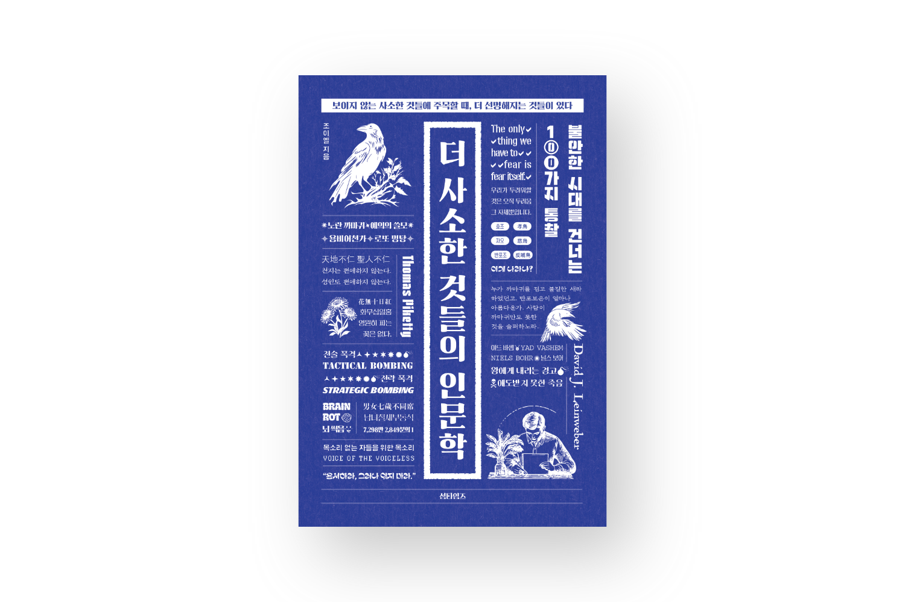
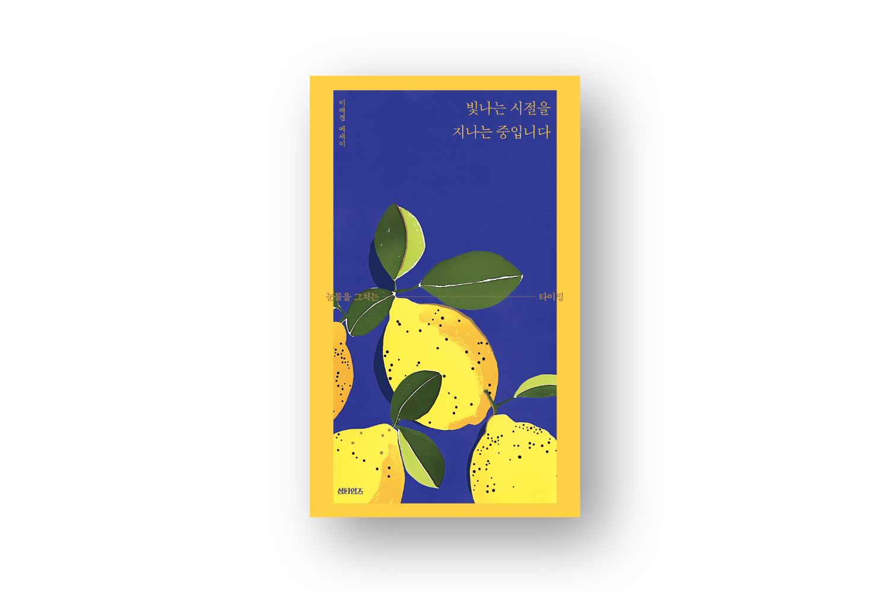

섬타임즈
따뜻하고 단단하고 선명한 책을 만듭니다
사람은 누구나 하나의 섬이며 저마다의 계절과 파도를 품은 채 살아갑니다.
우리는 서로를 온전히 건널 수는 없지만, 이야기는 그 사이를 건너갑니다.
도서 목록
섬타임즈가 새롭게 선보이는 책들을 소개합니다.

인문더 사소한 것들의 인문학
조이엘 저 · 2026.07.06
아주 사소한 시작되는 인문학. 역사와 철학, 종교, 문학, 과학을 넘나들며 세상을 바라보는 새로운 기준을 제시한다.
자세히 보기
에세이 인문
인문
소식 & 공지
섬타임즈의 최신 뉴스 및 이벤트 소식을 전합니다.
행사
2026.09.10
2026 가을 여유당 북페어 참가 안내
부스 위치 및 작가 사인회 일정 안내드립니다.
이벤트
2026.08.20
섬타임즈 팝업 스토어 오픈
작가 조이엘과 함께하는 따뜻한 차 한 잔의 시간.
모집
2026.07.01
2027 상반기 원고 투고 모집
에세이 및 인문 교양 분야의 독창적인 원고를 기다립니다.